Obliczanie miejsc zerowych funkcji
Jednym z takich algorytmów numerycznych jest algorytm wyznaczający miejsce zerowe funkcji.
Metoda połowienia
Jest to najprostsza z metod wyznaczania miejsca zerowego funkcji. Polega ona na dzieleniu zadanego przedziału na połowy i rozpatrywania tego z dwóch przedziałów, na którego krańcach wartości różnią się znakiem.
Wykres przykładowej funkcji

Przykład programu
// Program znajduje miejsce zerowe funkcji f(x) // za pomoca algorytmu polowienia - bisekcji //--------------------------------------------- // (C)2006 mgr J.Walaszek I LO w Tarnowie #include <iostream> #include <iomanip> #include <cmath> #include <cstdlib> using namespace std; const double EPS0 = 0.0000000001; // dokladnosc porownania z zerem const double EPSX = 0.0000000001; // dokladnosc wyznaczenia pierwiastka // Funkcja, ktorej miejsce zerowe obliczamy // f(x) = x^3*(x+sin(x^2-1)-1)-1 // <-1,0> i <1,2> //----------------------------------------- double f(double x) { return x * x * x * (x + sin(x * x - 1) - 1) - 1; } //----------------------------------------------------- // Program glowny //----------------------------------------------------- int main() { double a,b,x0,fa,fb,f0; cout << setprecision(5) // 5 cyfr po przecinku << fixed; // format staloprzecinkowy cout << "Obliczanie pierwiastka funkcji - metoda bisekcji\n" "f(x) = x^3*(x+sin(x^2-1)-1)-1\n" "------------------------------------------------\n" "(C)2006 mgr Jerzy Walaszek I LO w Tarnowie\n\n" "Podaj zakres poszukiwan pierwiastka:\n\n"; cout << "a = "; cin >> a; cout << "b = "; cin >> b; cout << "\n------------------------------------------------\n\n" "WYNIK:\n\n"; fa = f(a); fb = f(b); if(fa * fb > 0) cout << "Funkcja nie spelnia zalozen\n"; else { while(fabs(a - b) > EPSX) { x0 = (a + b) / 2; f0 = f(x0); if(fabs(f0) < EPS0) break; if(fa * f0 < 0) b = x0; else { a = x0; fa = f0; } } cout << "x0 = " << setw(15) << x0 << endl; } cout << "\n------------------------------------------------\n\n"; system("pause"); return 0; }
Zadanie
Wyznacz przykładowy przedział zawierający tylko jeden pierwiastek tej funkcji.